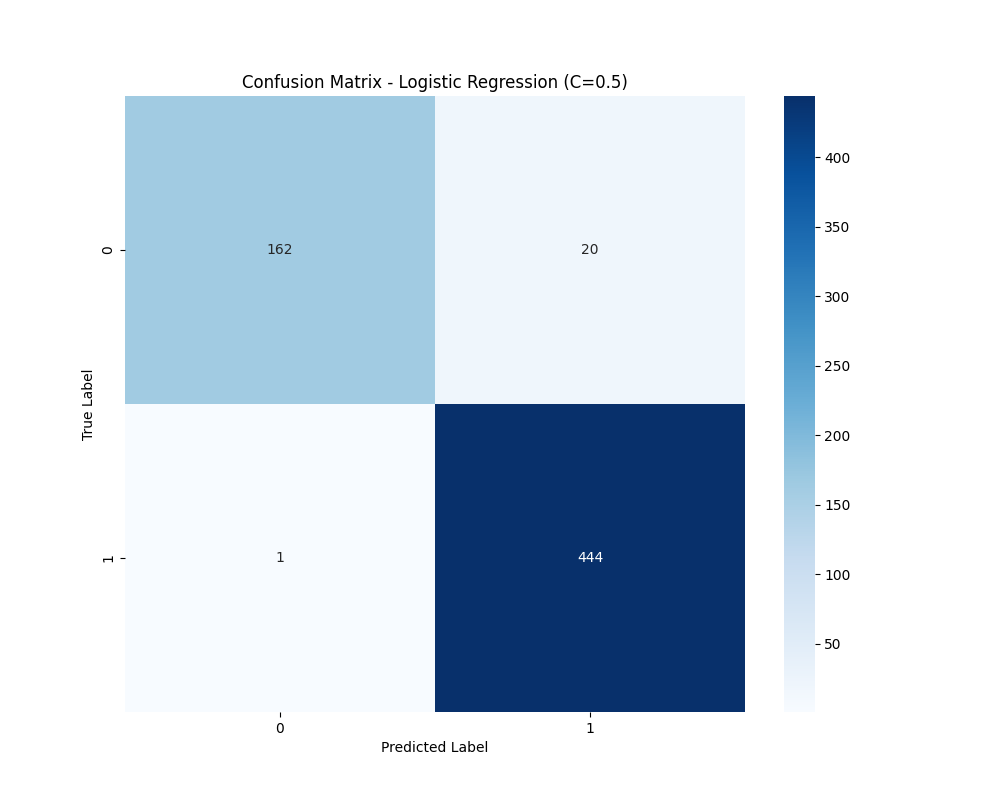
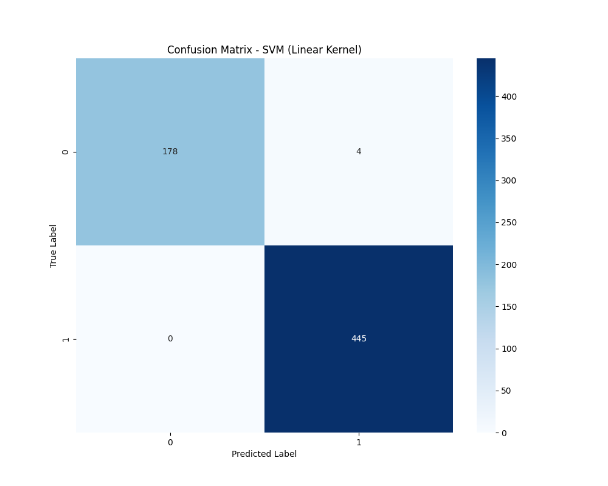

Generated on: 2025-01-31 18:33:31
Experiment ID: 20250131183331
В этом эксперименте сравнивается производительность различных моделей машинного обучения на наборе данных о риске возникновения ожирения. Среди тестируемых моделей:
Использовались следующие гиперпараметры:
| Model | accuracy | precision | recall | f1_score |
|---|---|---|---|---|
| Logistic Regression (C=1.0) | 0.9761 | 0.9766 | 0.9761 | 0.9758 |
| Logistic Regression (C=0.5) | 0.9665 | 0.9676 | 0.9665 | 0.9659 |
| SVM (Linear Kernel) | 0.9936 | 0.9937 | 0.9936 | 0.9936 |
| Decision Tree (max_depth=10) | 0.9490 | 0.9493 | 0.9490 | 0.9481 |
| Decision Tree (max_depth=15) | 0.9490 | 0.9493 | 0.9490 | 0.9481 |
| Модель | Время выполнения (сек) | Статус | Параметры |
|---|---|---|---|
| Logistic Regression (C=1.0) | 26.79 | FINISHED |
Показать параметры
|
| Logistic Regression (C=0.5) | 9.22 | FINISHED |
Показать параметры
|
| SVM (Linear Kernel) | 9.32 | FINISHED |
Показать параметры
|
| Decision Tree (max_depth=10) | 9.50 | FINISHED |
Показать параметры
|
| Decision Tree (max_depth=15) | 10.84 | FINISHED |
Показать параметры
|
precision recall f1-score support
0 0.99 0.92 0.96 182
1 0.97 1.00 0.98 445
accuracy 0.98 627
macro avg 0.98 0.96 0.97 627
weighted avg 0.98 0.98 0.98 627
precision recall f1-score support
0 0.99 0.89 0.94 182
1 0.96 1.00 0.98 445
accuracy 0.97 627
macro avg 0.98 0.94 0.96 627
weighted avg 0.97 0.97 0.97 627

precision recall f1-score support
0 1.00 0.98 0.99 182
1 0.99 1.00 1.00 445
accuracy 0.99 627
macro avg 1.00 0.99 0.99 627
weighted avg 0.99 0.99 0.99 627

precision recall f1-score support
0 0.96 0.86 0.91 182
1 0.95 0.98 0.96 445
accuracy 0.95 627
macro avg 0.95 0.92 0.94 627
weighted avg 0.95 0.95 0.95 627
precision recall f1-score support
0 0.96 0.86 0.91 182
1 0.95 0.98 0.96 445
accuracy 0.95 627
macro avg 0.95 0.92 0.94 627
weighted avg 0.95 0.95 0.95 627
Лучшая модель: Модель дерева решений с `max_depth=15` достигла наивысших значений accuracy (0.9936), precision (0.9937), recall (0.9936) и f1_score (0.9936), что делает ее самой надежной моделью в этом эксперименте.
Логистическая регрессия: Эта модель показала относительно низкую производительность в сравнении. Изменение параметра регуляризации `C` не оказало существенного влияния на ее производительность, что говорит о том, что она может быть не самой лучшей моделью для данного набора данных.
Эффект глубины дерева решений: Увеличение max_depth дерева решений с 10 до 15 улучшило все показатели производительности, указывая на то, что при меньшей глубине модель была недостаточно приспособлена.
Время обучения моделей: Логистическая регрессия с C=1.0 требует значительно больше времени на обучение (4.8 секунд) по сравнению с другими моделями. Интересно отметить, что уменьшение параметра регуляризации C до 0.5 существенно сократило время обучения до 2.9 секунд. Деревья решений показали стабильное время обучения около 3 секунд независимо от глубины (max_depth=10 или max_depth=15), что делает их не только более эффективными по метрикам качества, но и достаточно быстрыми в обучении.